Overview
By creating a mechanism that could adjust a lens attached to a phone, I looked at magnified objects and used them as inspiration to create multiple structures. Ranging from small to extra-large models, the built structures acted as a way of exploring how people interact with objects of different scales within a space.
Figuring Out a Mechanism
Given a lens that could magnify objects about 30x and be attached to a smartphone, the first step of the project was to create a structure that could be used with the phone and lens to have a more efficient experience looking at objects. In my design, I emphasized portability and stability while using the phone, since it's a pain to hold it still and take photos of small objects. I sketched out a few ideas that could fix those problems, ideally wanting to create a sturdy, yet collapsible structure.
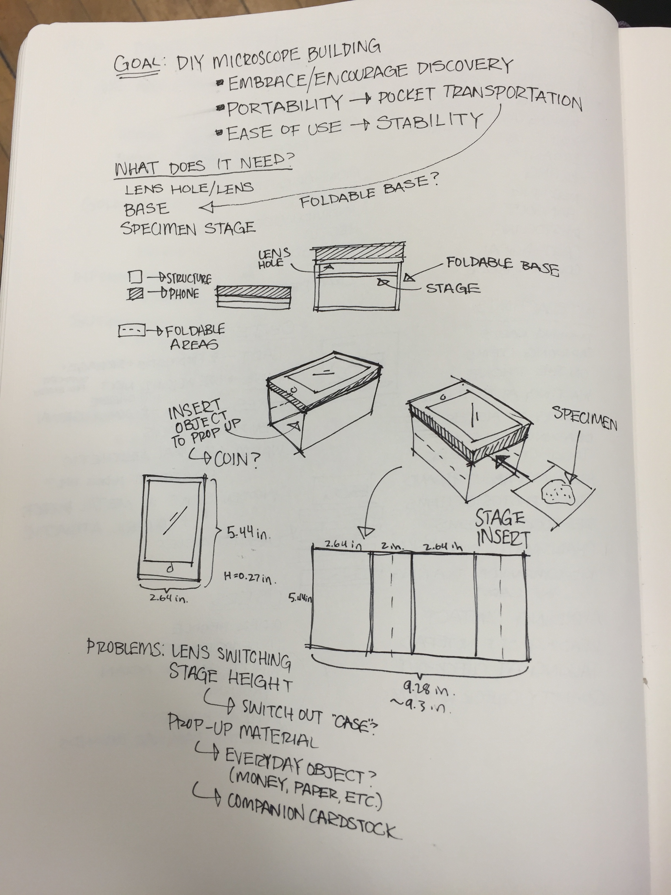
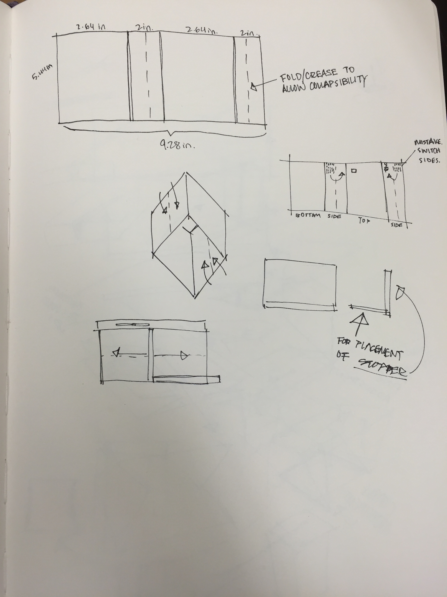
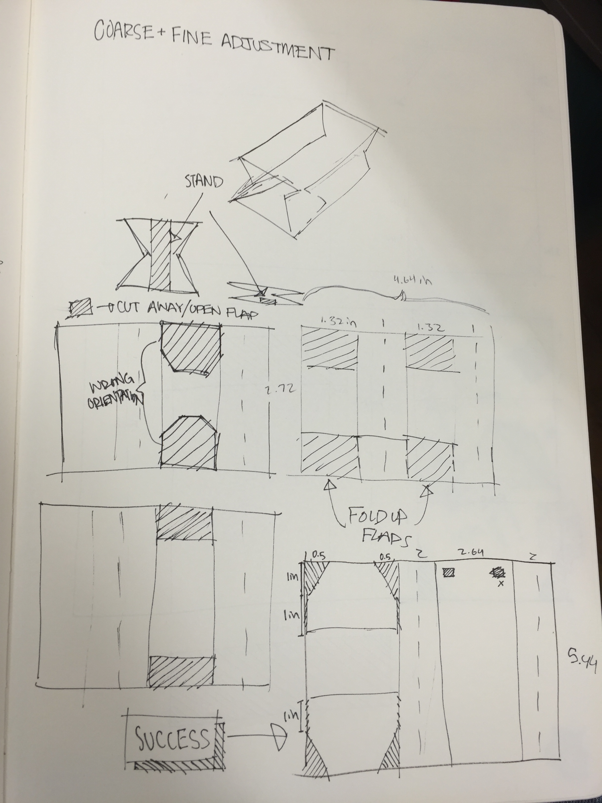
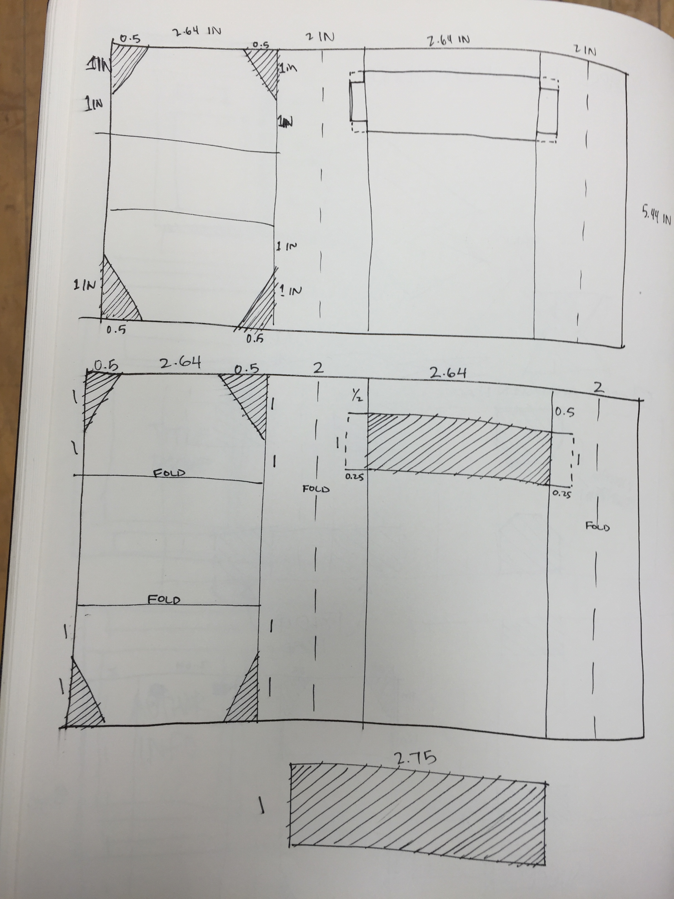
Structure Iterations
I had an initial design and created a quick paper prototype to see how the collapsible mechanism would work. While the mechanism worked fine, I had to figure out how to make it stand on its own under the weight of the phone. I made many different iterations to explore the idea of using flaps that could stand perpendicular to the phone and hold it up. I also experimented with different materials that could fold easily, laser cutting butyrate only to find that it didn't work quite as smoothly as the bristol paper model. Finally, part of my iterations included figuring out how to incorporate a mechanism that could finely adjust close objects.


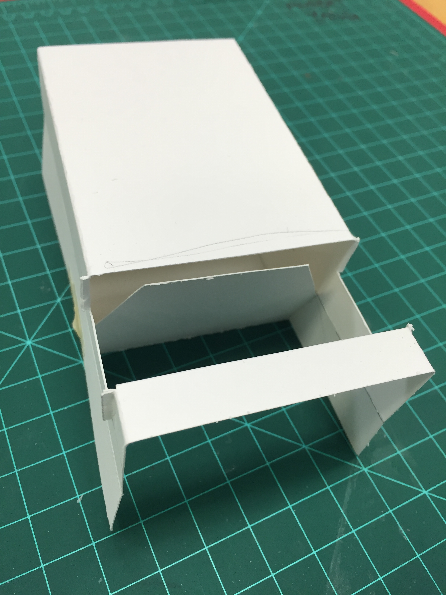
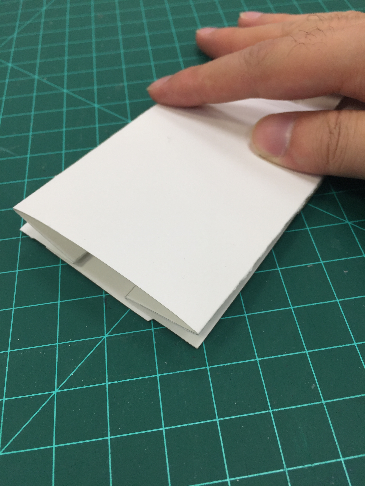
Final Microscope Model
My final model was made of bristol paper, able to stand up by itself and easily collapsible as well. I cut two rectangles from the sides of the structure so the user could put a specimen slide on there, and had two flaps that could act as the fine adjustment for the structure.

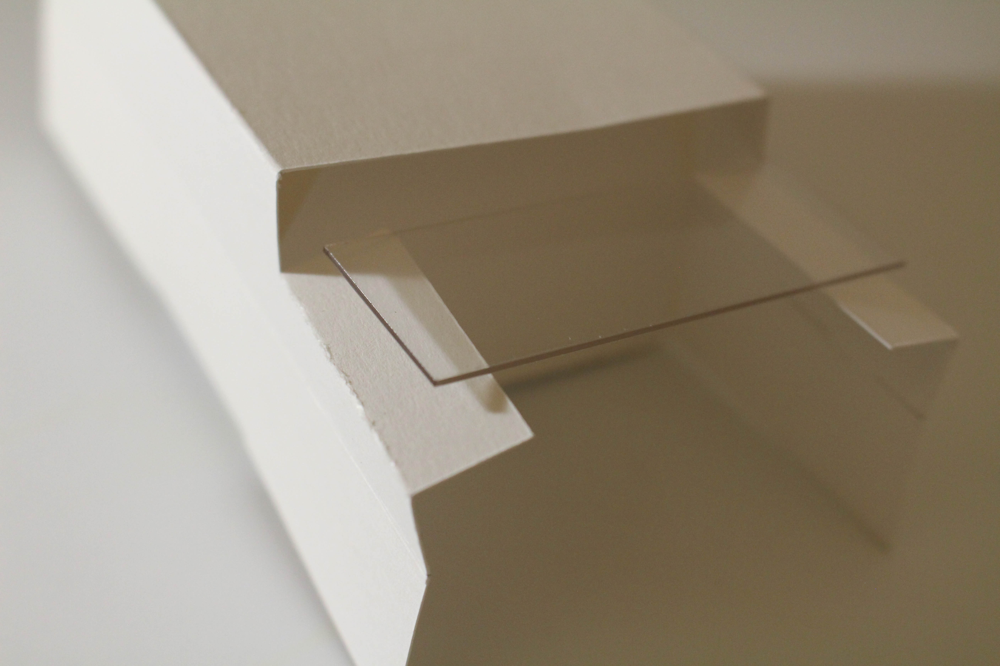


Looking at the Invisible
I looked at many objects using my microscope, including hot chocolate mix, ink on different surfaces, and mini-clothespins. The object that I found most interesting, however, was a layer of bubbles in between two slides (pictured below). I decided to explore how to turn this two-dimensional object into a physical, three-dimensional structure.


Creating a 3D Model
My next step was to create a “grapefruit”-sized model, which would act as my regular model. I explored different ways to interpret the structure of the bubbles and translate them into a three-dimensional structure. Playing around with foam, paper, and cardstock, I initially attempted to make round, circular structures that seemed more fluid, but decided to interpret the bubbles in a more geometric fashion. I looked into how they interact with each other to minimize the surface area between them, and also researched how a honeycomb structure accomplishes something similar. From there, I moved into creating a geometric structure with three layers mostly hexagons of different sizes and a few pentagons.
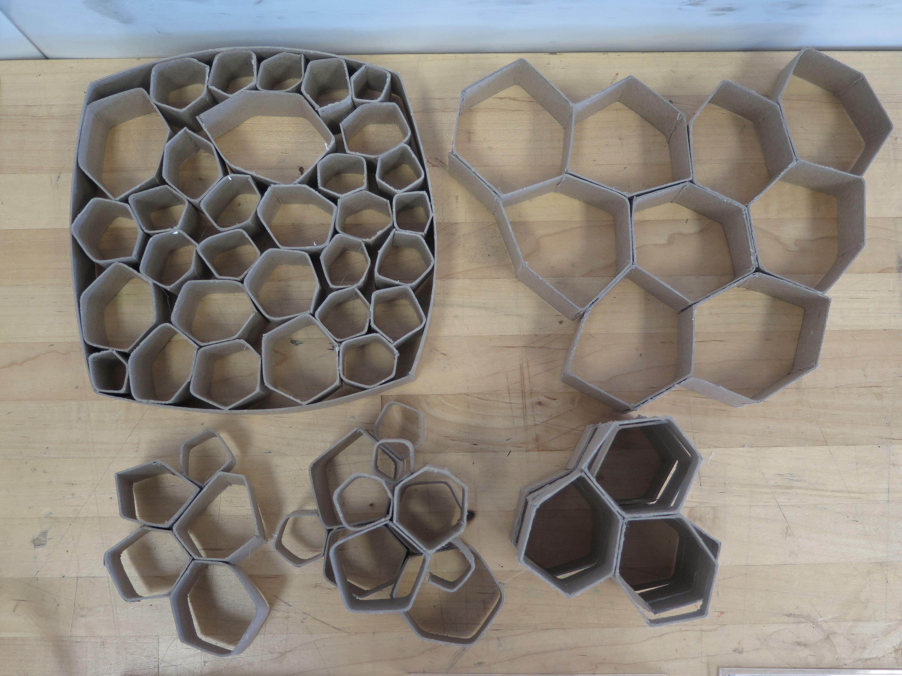
Scaling Up and Down
I created my normal-sized model (3 inches tall and 6 inches wide) to act as a reference for the small, large, and extra-large models. For the small model (0.1 times the normal size), I laser cut three layers and put them together. For the large model (10 times the normal size), I cut panels of foamcore for each side of a hexagon and put them together. The extra-large model (100 times the normal size) was done in Adobe Photoshop, and showed the concept of an installation of my structure within a public space.
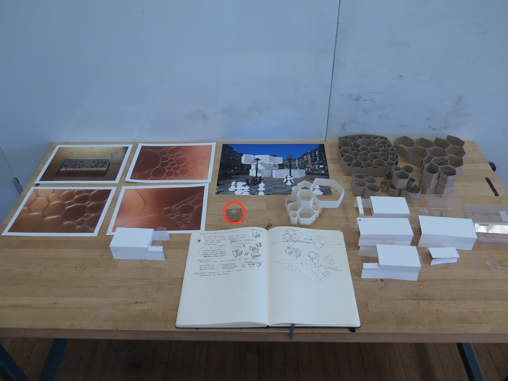
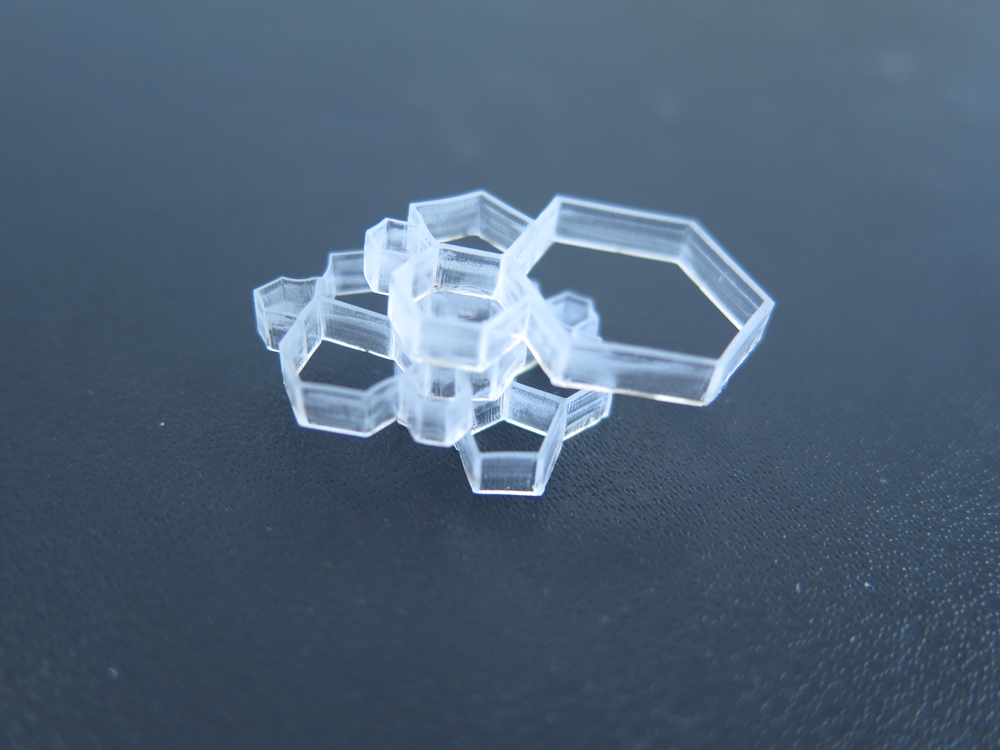
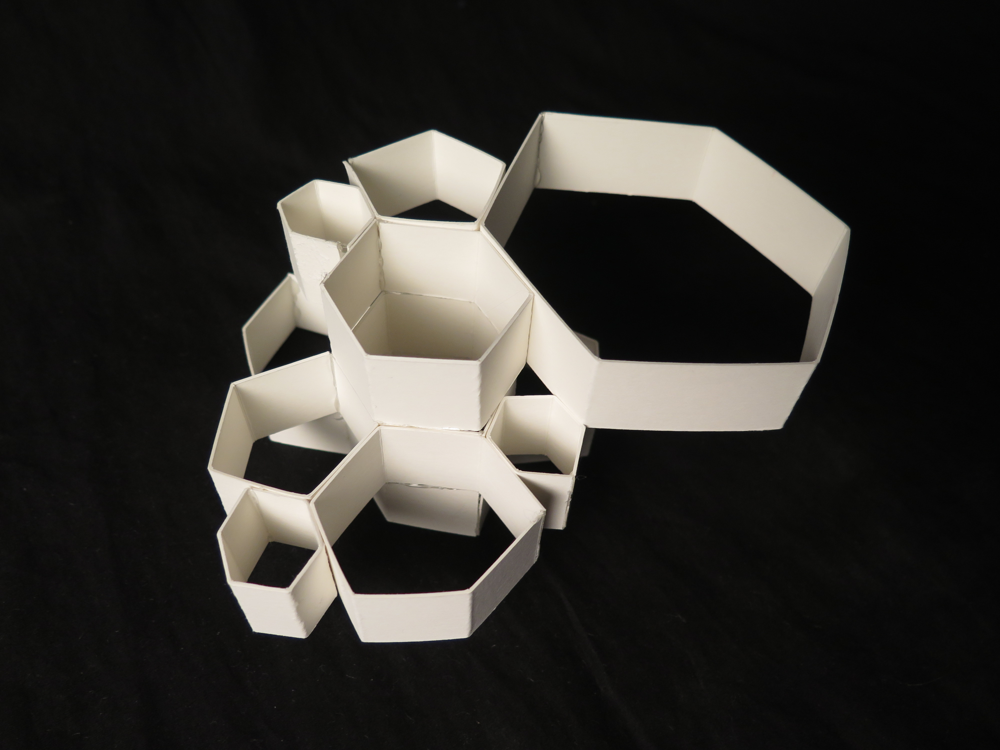
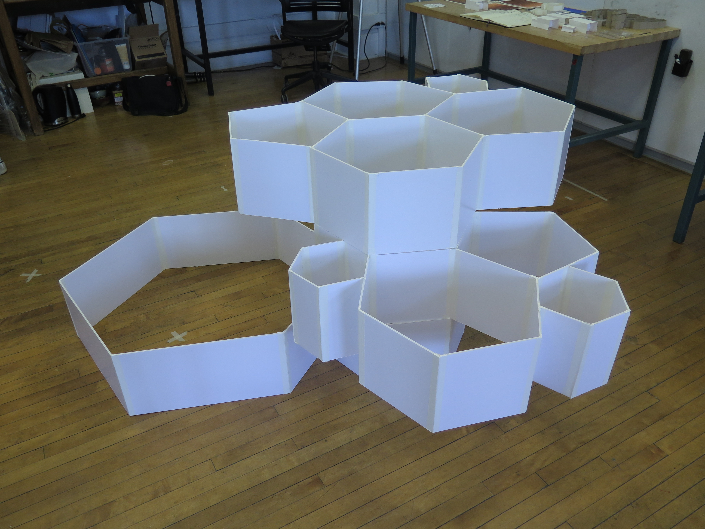
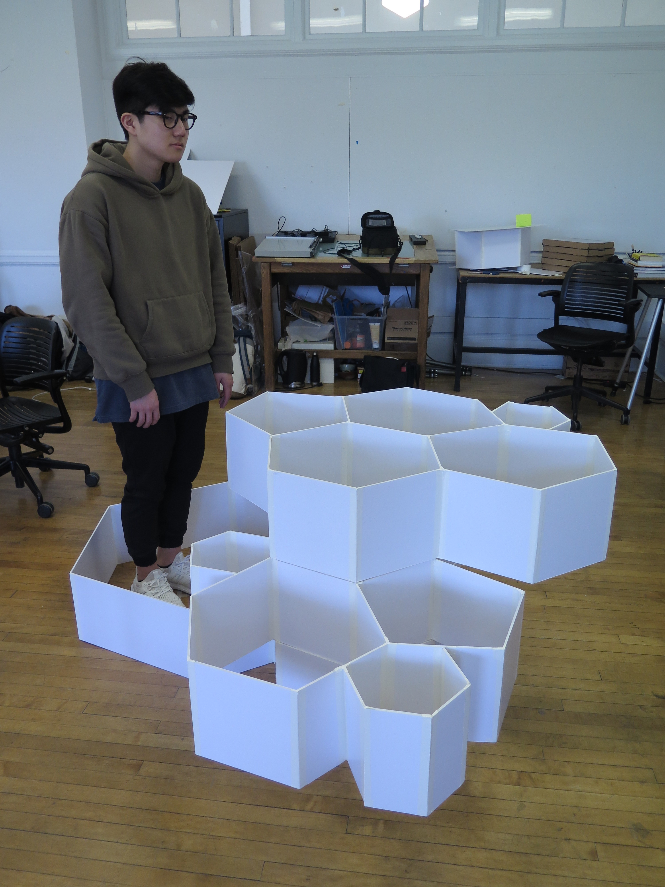